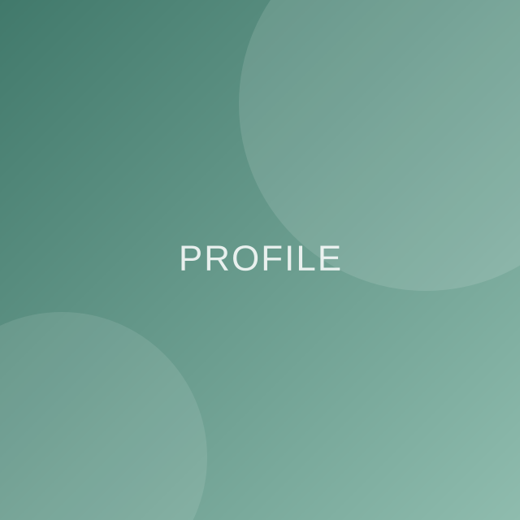

サイト制作
- WordPress（SWELL）のカスタマイズ
- HTML / CSS（BEM設計）
- JavaScript（Swiper・IntersectionObserver）
- レスポンシブ対応
- 画像最適化（WebP・軽量化）
ABOUT

Webサイト制作／企業広報
企業の広報課に所属し、自社および関連施設のWebサイト制作・運用を担当しています。 この2年間で6つのサイトを企画から公開まで担当し、現在7サイト目を制作中です。
制作会社に外注するのではなく「社内でつくる」からこそ、現場へのヒアリング、 写真や原稿の準備、公開後の更新・改善まで、サイトづくりの工程をひととおり経験してきました。 Webにくわしくない方と一緒に進めるのが、いちばん得意です。
小学生2児の母として在宅で働きながら、限られた時間で成果を出す段取り力と、 現場の声を聞く力を大切にしています。
6サイト
2年間で公開したサイト数
100%
企画から公開まで一貫担当
7件目
現在も新しいサイトを制作中
サイトの目的・ターゲット・いちばん伝えたいことを丁寧にお伺いします。「まだ何も決まっていない」段階からで大丈夫です。
サイトマップと各ページの構成をご提案。更新のしやすさとデザイン性を両立させます。
パスワード付きのテスト環境で制作を進め、途中経過をご確認いただきながら仕上げます。
サーバー・ドメイン・SSLの設定からSEOの基本設定まで対応し、安心して公開できる状態でお引き渡しします。
更新方法のレクチャーや、公開後の改善のご相談も承ります。「作って終わり」にしません。